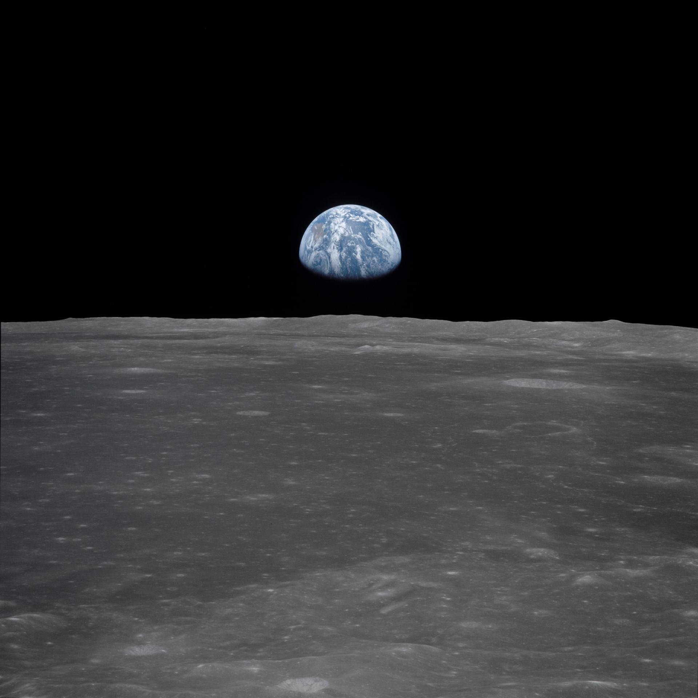
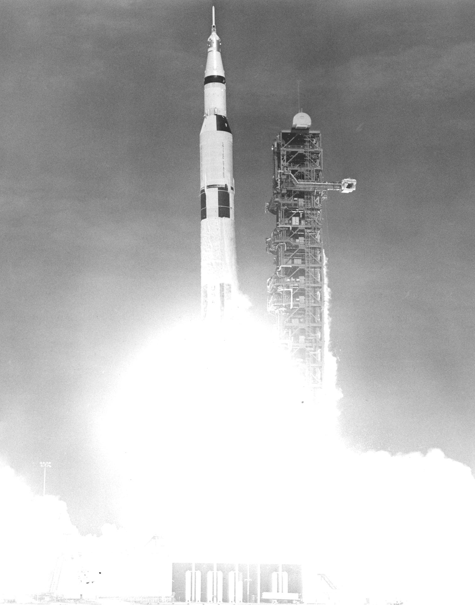
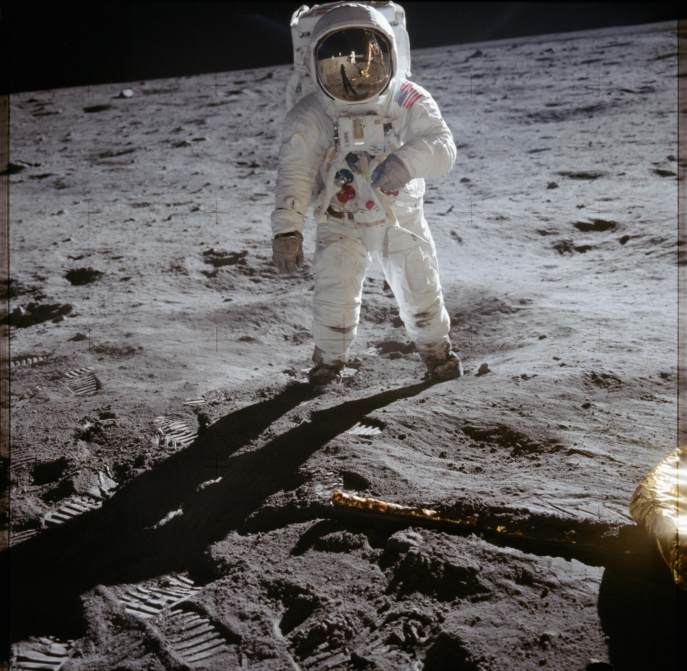
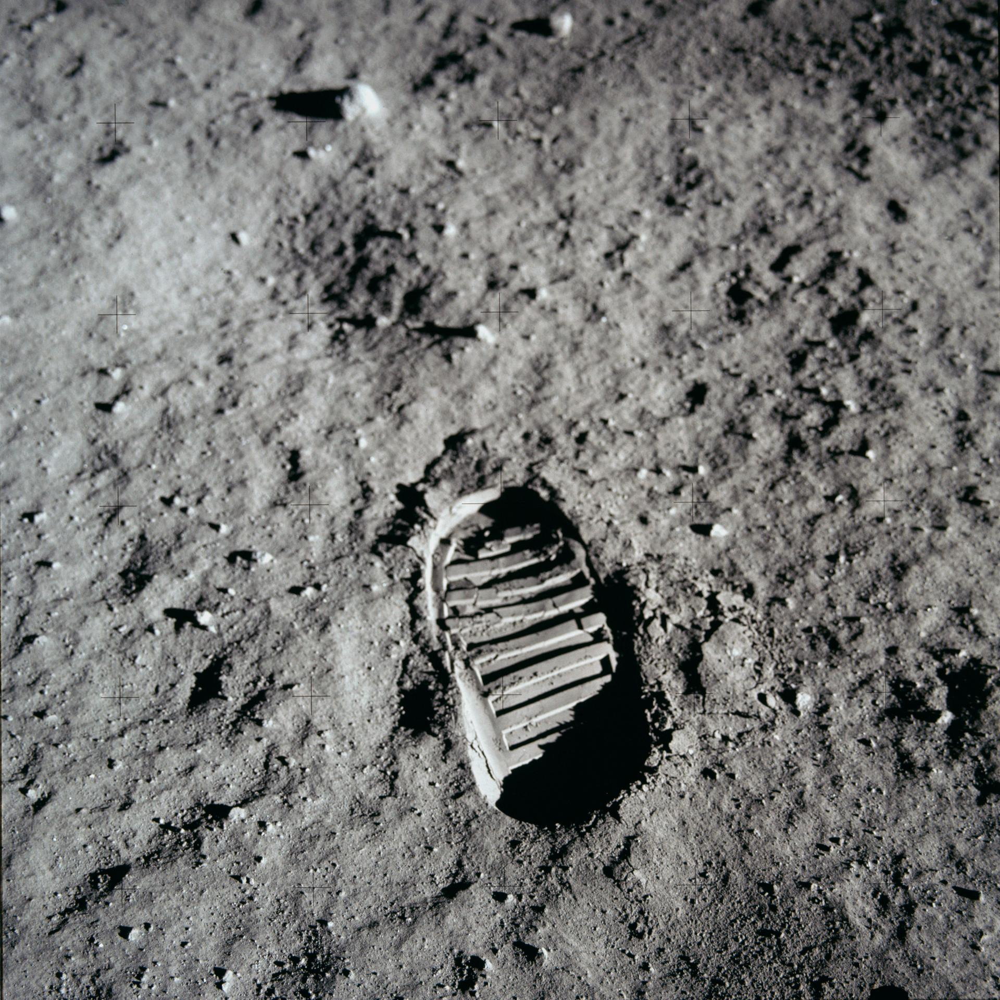

A WORLD
AWAY.
Three people left Earth.
Two walked on another world.
Everything came back different.
Before it was history,
it was a departure.
A rocket. A horizon. A footprint.
Read the mission through the images
that brought it back to Earth.

NASA / 6900540LEAVE
THE KNOWN.
Saturn V rises from Kennedy Space Center. The journey begins with a departure from everything familiar.
LAUNCH / KENNEDY SPACE CENTERFar enough
to see home.
Departure. Lunar orbit. Return.
A schematic of the journey,
not a flight-path measurement.

NEIL ARMSTRONG / NASAAS11-40-5903
ANOTHER
WORLD.
A HUMAN
SCALE.
The unfamiliar becomes tangible: a boot, a shadow, a gold visor. The archive holds both the scale of the journey and the small details of being there.
Not just a still.
A moment unfolding.
A 24-second excerpt from NASA's Apollo 11 mission montage. Original archival material, with captions.
BRING IT
BACK TO EARTH.
Open a frame. Read its context.
Follow it to the original NASA record.
These are documents, not decoration.

NASA / AS11-40-5877